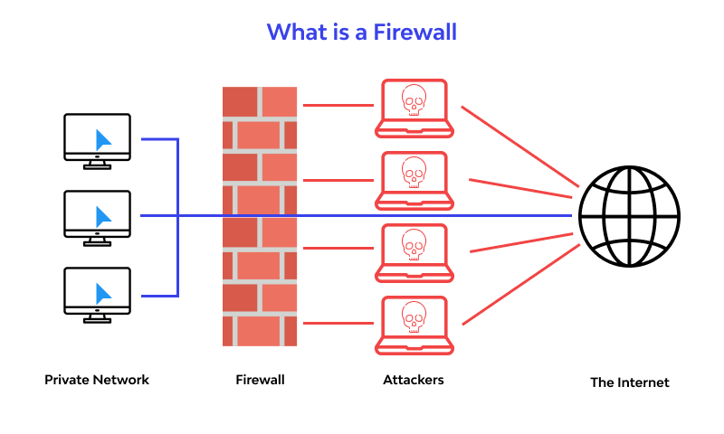
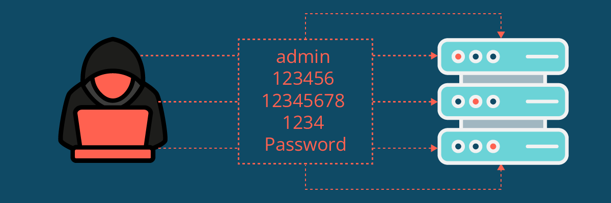
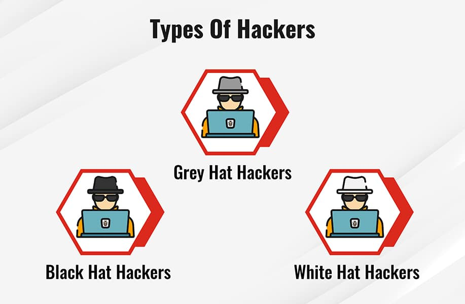
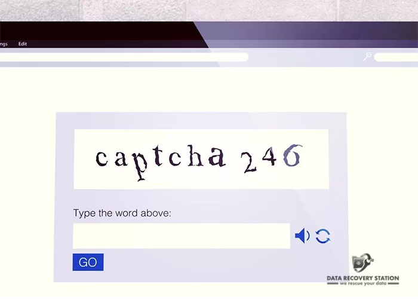

More Project:
3d Game.
2d game.
Dark and Light Coder.
Key Word's: পাসওয়ার্ড, ফায়ারওয়াল, হ্যাকিং, হ্যাকার, ডেটা সেন্টার,captcha।
পাসওয়ার্ড:
পাসওয়ার্ড হল শব্দ বা বিভিন্ন অক্ষরের সমষ্টি যা ব্যবহার করা হয় ব্যবহারকারীর পরিচয় অথবা
প্রবেশ অনুমোদন যাচাইয়ের কাজে যার মাধ্যমে ব্যবহারকারী নির্দিষ্ট জায়গায় প্রবেশাধিকার পায়।
এই পাসওয়ার্ড হল গোপনীয় তাই এটি অন্য কারো কাছ থেকে গোপন রাখা হয়, তাদের প্রবেশ ঠেকাতে।
ফায়ারওয়াল:
ফায়ারওয়াল হল একটি নেটওয়ার্ক নিরাপত্তা ব্যবস্থা যা ক্ষতিকারক ট্র্যাফিক এবং অননুমোদিত অ্যাক্সেস থেকে কম্পিউটার বা নেটওয়ার্ককে রক্ষা করে।

সংক্ষেপে, ফায়ারওয়াল একটি গুরুত্বপূর্ণ নিরাপত্তা ব্যবস্থা যা নেটওয়ার্ক এবং ডেটা সুরক্ষার জন্য ব্যবহৃত হয়। এটি ক্ষতিকারক প্রোগ্রাম, হ্যাকার এবং অন্যান্য সাইবার হুমকি থেকে রক্ষা করতে সাহায্য করে।
ফায়ারওয়াল মূলত দুই ধরনের হয়ে থাকে:
নেটওয়ার্ক ফায়ারওয়াল:
পুরো নেটওয়ার্ককে রক্ষা করে।
হোস্ট ফায়ারওয়াল:
একটি নির্দিষ্ট কম্পিউটারকে রক্ষা করে।
এছাড়াও, ফায়ারওয়াল হার্ডওয়্যার এবং সফটওয়্যার উভয় রূপেই উপলব্ধ।
হ্যাকিং:
হ্যাকিং হল কম্পিউটার সিস্টেম, নেটওয়ার্ক বা ডিজিটাল ডিভাইসে অননুমোদিত অ্যাক্সেস লাভ করার পদ্ধতি যা তাদের শোষণ বা হেরফের করার উদ্দেশ্যে করা হয়।
এটি নিরাপত্তা ব্যবস্থা বাইপাস এবং লক্ষ্যবস্তু সিস্টেমের উপর নিয়ন্ত্রণ লাভ করার জন্য বিভিন্ন কৌশল এবং সরঞ্জাম ব্যবহার করে।
হ্যাকার:
হ্যাকার হচ্ছেন সেই ব্যক্তি যিনি নিরাপত্তা ব্যবস্থার দুর্বল দিক খুঁজে বের করায় বিশেষভাবে দক্ষ অথবা অন্য কম্পিউটার ব্যবস্থায় অবৈধ অনুপ্রবেশ করতে সক্ষম বা এর সম্পর্কে গভীর জ্ঞানের অধিকারী
হ্যাকারের প্রকারভেদ:
সাদা টুপি হ্যাকার: এরা কম্পিউটার তথা সাইবার ওয়ার্ল্ডের ভালো এর জন্য কাজ করে, এরা কখনো অপরের ক্ষতি করেনা, এদের কে ইথিক্যাল হ্যাকার বলা হয়।
ধূসর টুপি হ্যাকার: এরা এমন এক ধরনের হ্যাকার যারা সাদা টুপি এবং কাল টুপি হ্যাকারের মধ্যপর্তি স্থানে অবস্থান করেন । এরা ইচ্ছা করলে কারোও ক্ষতি ও করতে পারে এবং উপকার ও করতে পারে।
কালো টুপি হ্যাকার: হ্যাকার বলতে সাধারনত কালো টুপি হ্যাকার দের বোঝায় এরা সব সময় কোন না কোন ভাবে অপরের ক্ষতি করার চেস্টা করে । সাইবার ওয়ার্ল্ডে এরা সবসময় ঘ্রিনিত হয়ে থাকে ।
এছারাও আরো কিছু হ্যাকারের ধরন রয়েছে ।
যেমন- (সাইবার এক্সডি) এরা নিজেরা ভিবিন্ন শেল আপলোড করে থাকে ওয়েব সাইটে এবং অন্যের ক্ষতি করেনা।
(স্ক্রিপ্ট কিডি) এরা নিজেরা কিছুই পারেনা বরং বিভিন্ন সফটওয়ার টুলস ব্যাবহার করে থাকে।

ডেটা সেন্টার:
একটি ডেটা সেন্টার হল একটি স্থান বা ভবন যেখানে সার্ভার, নেটওয়ার্কিং সরঞ্জাম, স্টোরেজ সিস্টেম এবং অন্যান্য আইটি অবকাঠামো স্থাপন করা হয়।
এটি মূলত একটি কেন্দ্রীয় অবস্থান যেখানে বিপুল পরিমাণ ডেটা সংরক্ষণ, প্রক্রিয়াকরণ এবং বিতরণ করা হয়।সহজ ভাষায়, ডেটা সেন্টার হল সেই জায়গা যেখানে ইন্টারনেটের মাধ্যমে আমরা যে সকল তথ্য, ছবি, ভিডিও, বা অ্যাপ্লিকেশন ব্যবহার করি, তার সবকিছু জমা থাকে এবং সেখান থেকেই পরিবেশিত হয়।
ক্যাপচা (CAPTCHA):
ক্যাপচা (CAPTCHA) হল একটি নিরাপত্তা ব্যবস্থা যা কম্পিউটার এবং মানুষের মধ্যে পার্থক্য করতে ব্যবহৃত হয়।
এর মাধ্যমে স্বয়ংক্রিয় প্রোগ্রাম (বট) এবং অন্যান্য ক্ষতিকারক সফটওয়্যারকে ওয়েবসাইট বা অনলাইন পরিষেবাগুলিতে প্রবেশ করা থেকে বিরত রাখা যায়।

ক্যাপচা কেন ব্যবহার করা হয়?
স্প্যাম এবং বট কার্যকলাপ প্রতিরোধ করতে: ক্যাপচা স্বয়ংক্রিয় প্রোগ্রাম এবং বটদের দ্বারা ওয়েবসাইট বা অনলাইন পরিষেবাগুলিতে স্প্যাম বা ক্ষতিকারক কার্যকলাপ চালানো থেকে বিরত রাখে।
ব্যবহারকারীর পরিচয় নিশ্চিত করতে: ক্যাপচা নিশ্চিত করে যে ব্যবহারকারী একজন প্রকৃত মানুষ, কোনো স্বয়ংক্রিয় প্রোগ্রাম নয়।
সুরক্ষা বাড়াতে: ক্যাপচা ওয়েবসাইট এবং অনলাইন পরিষেবাগুলির সুরক্ষার একটি অতিরিক্ত স্তর যোগ করে, যা হ্যাকিং এবং অন্যান্য নিরাপত্তা ঝুঁকি কমাতে সহায়ক।
পাঠ ১৫ সম্পর্কিত কিছু প্রশ্ন:
- আইসিটি কিভাবে বিশ্বকে পরিবর্তন করতে পারে ?
- দৈনন্দিন জীবনে তথ্য ও যোগাযোগ প্রযুক্তির কিছু ব্যবহার উল্লেখ কর।
- পাসওয়ার্ড কাকে বলে ?পাসওয়ার্ডের কয়েকটি উদাহরণ দাও।
- ফায়ার কাকে বলে? ফায়ারবাল কত প্রকার ও কি কি বর্ণনা কর।
- হ্যাকিং কি হ্যাকিং থেকে বাঁচতে আমাদের কোন কোন পদক্ষেপ গ্রহণ করা উচিত।
- হ্যাকার কাকে বলে ? কত প্রকার কি কি বর্ণনা কর?
- ডেটা সেন্টার কি ? ডেটা সেন্টারের কাজ উল্লেখ করো।
- ক্যাপচা কি ? ক্যাপচা কেন ব্যবহার করা হয় উল্লেখ কর।
- পাসওয়ার্ড ব্যবহারের পাঁচটি সুবিধা লেখ।
- কম্পিউটার নেটওয়ার্কের নিরাপত্তা রক্ষায় করণীয় পদক্ষেপ গুলো লেখ।
তথ্য ও যোগাযোগ প্রযুক্তি:
তৃতীয় অধ্যায়(তথ্য ও যোগাযোগ প্রযুক্তির ব্যবহার):
Click on below link's.